Café de especialidad, en grano y listo para tu método de preparación. Seleccionado finca por finca: cada bolsa cuenta el origen, la altura y el perfil exacto de lo que estás por tomar.
DESTACADO
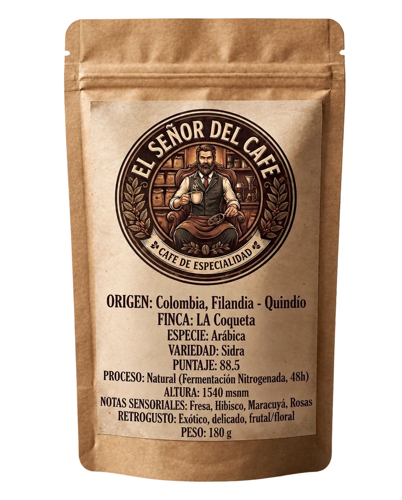
Sidra Natural
Filandia, Quindío · 88.5 pts
Nuestra selección
COLOMBIA Filandia Quindío Variedad · Sidra
Variedad Sidra procesada en natural con fermentación nitrogenada de 48 horas. Notas a fresa, hibisco, maracuyá y rosas; un retrogusto exótico, delicado y frutal.
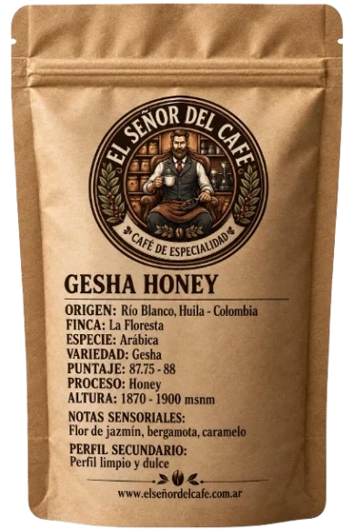
COLOMBIA Tolima Sur Variedad · Geisha
Café de Tolima Sur, Colombia. Finca La Floresta, productor Fermín Gallego. Proceso honey; notas a flor de jazmín, bergamota y caramelo, con perfil limpio y dulce.
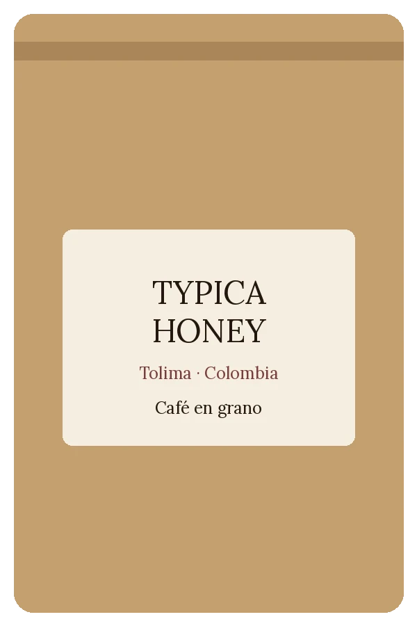
COLOMBIA Tolima Variedad · Typica
Café de Tolima, Colombia. Productor Wilson Pérez Marroquín. Proceso honey; notas a flor de azahar, caña dulce, mandarina madura y caramelo.
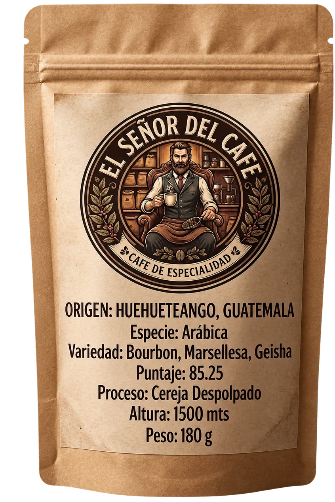
GUATEMALA Huehuetenango Variedad · Bourbon, Marsellesa, Geisha
Café de Huehuetenango, Guatemala. Mezcla de variedades procesadas en cereja despolpado, con aroma cítrico y notas de vino, nuez y frutos rojos. Sabor intenso y frutal.
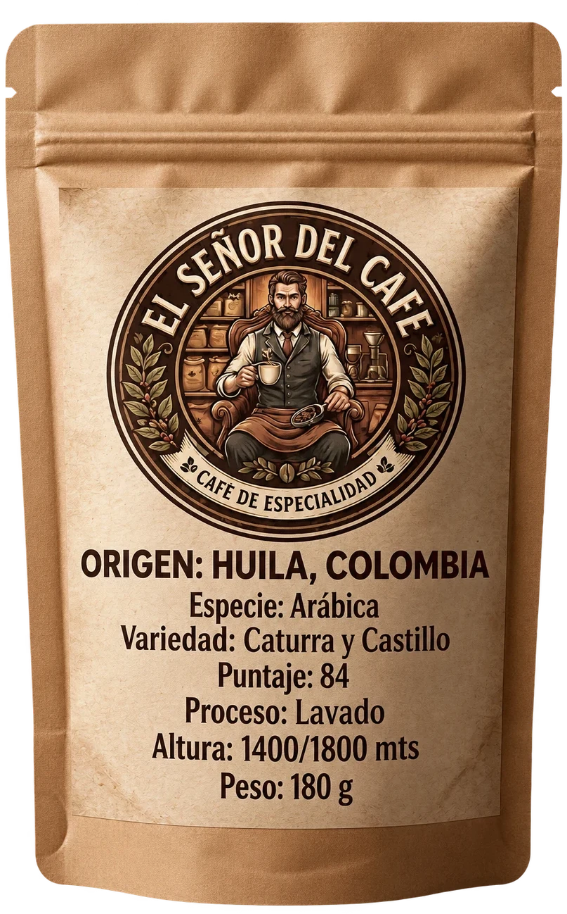
COLOMBIA Huila Variedad · Caturra y Castillo
Café de Huila, Colombia. Nuestro blend base para espresso: combinamos la dulzura de la Caturra con el cuerpo y la crema del Castillo. Notas a chocolate, caramelo, panela y naranja; cuerpo cremoso y crema persistente. Ideal con y sin leche.
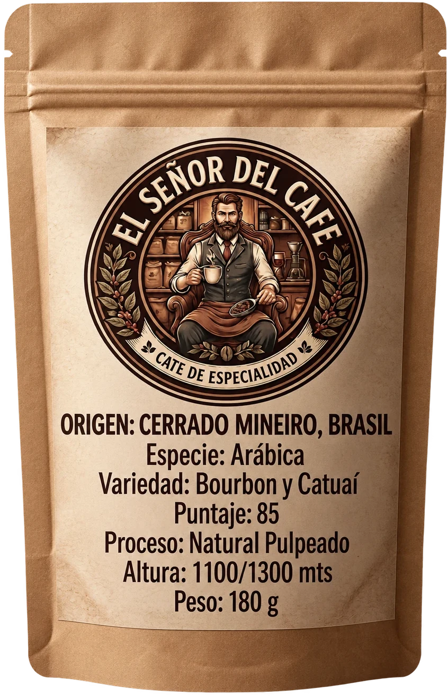
BRASIL Cerrado Mineiro Variedad · Bourbon y Catuaí
Café de Cerrado Mineiro, Brasil. Proceso natural pulpeado, entre 1100 y 1300 msnm.
Café destacado
Cultivado por Juan Sebastián Bustos Herrera en Filandia, Quindío. Un lote de especialidad puntuado en 88.5, con fermentación nitrogenada de 48 horas que resalta sus notas frutales y florales.
Productor
Juan Sebastián Bustos Herrera
Finca
La Coqueta
Variedad
Sidra
Altitud
1540 msnm
Proceso
Natural, fermentación nitrogenada 48h
Puntaje
88.5
Notas sensoriales: fresa, hibisco, maracuyá y rosas.
Retrogusto: exótico, delicado, frutal / floral.
Empaque premium
Cada bolsa está pensada para conservar el aroma y la frescura del café desde el envasado hasta que la abrís.
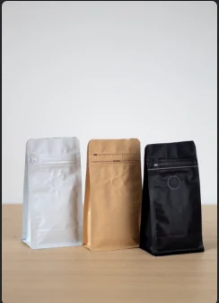
Trilaminada
140 micrones
Válvula
Desgasificadora
Zipper
Hermético
Base
Stand-up
Apertura
Fácil, con muesca
Certificada
Por ANMAT
Quiénes somos
Somos dos amigos de San Vicente que decidimos traer a Argentina lo que no conseguíamos acá: café de especialidad de verdad. Importamos directo de origen — Colombia, Brasil y Guatemala — y trabajamos con micro-lotes de varietales exóticos como Geisha, Sidra y Caturra, además de los mejores granos de Brasil y Guatemala. Café 100% en grano, tostado fresco.
No es el café del súper. Es café premium para los que saben disfrutar una buena taza.
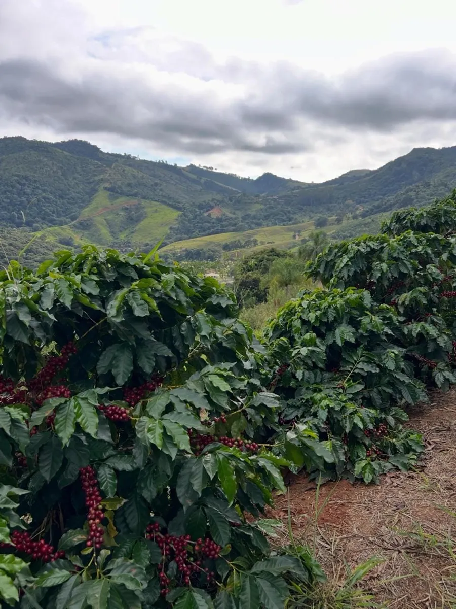
Historia
Dos amigos de San Vicente que importan café de especialidad directo de origen.
Origen directo
Importamos de Colombia, Brasil y Guatemala, seleccionando cada lote por finca.
Micro-lotes
Varietales exóticos como Geisha, Sidra y Caturra, junto a los mejores granos de Brasil y Guatemala.
Tostado fresco
Café 100% en grano, tostado fresco para que lo prepares en tu casa.
Galería
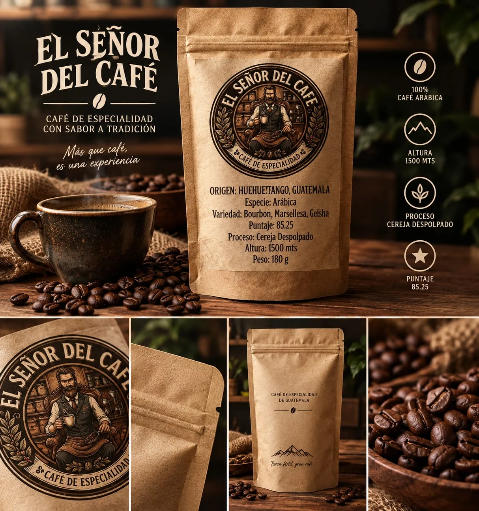
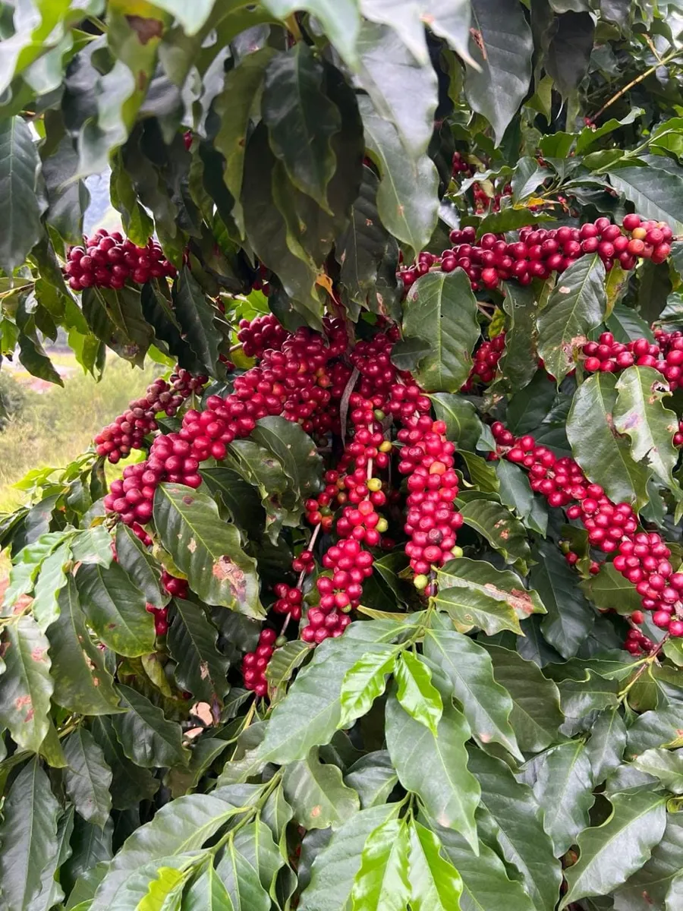
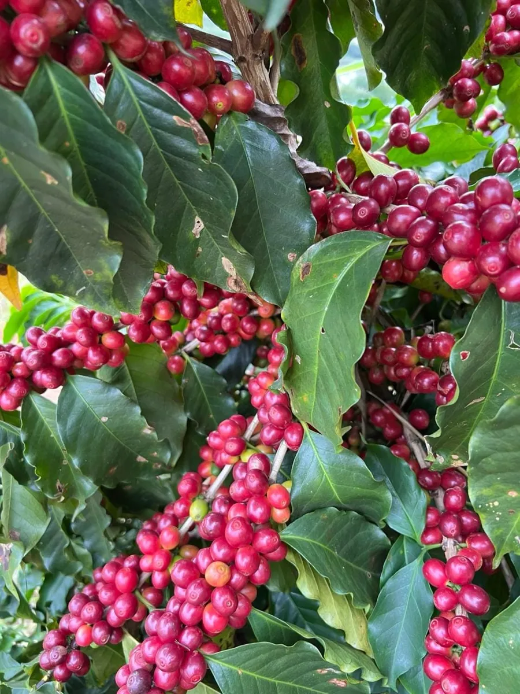
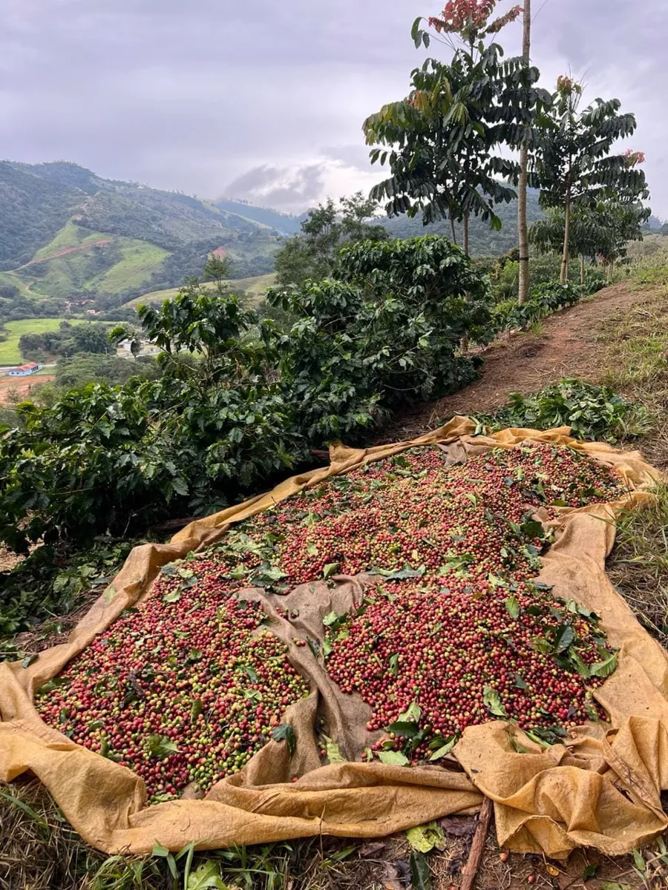
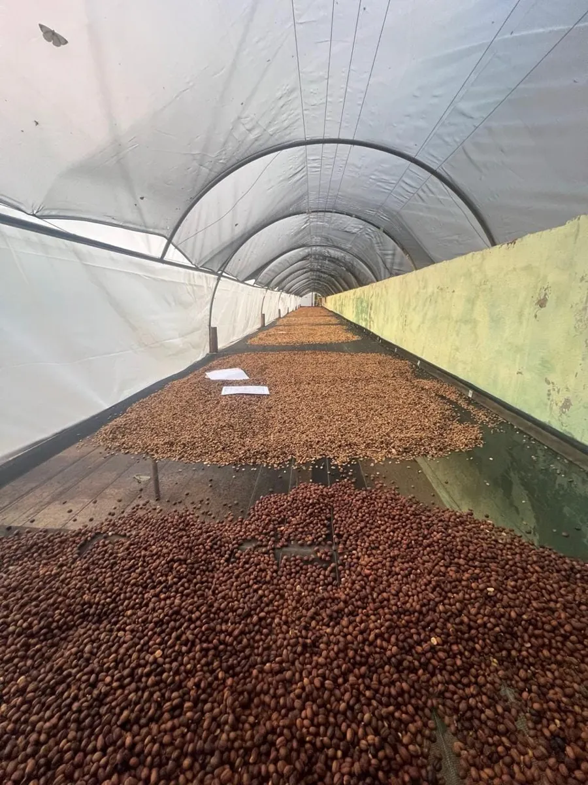
Contacto y pedidos
Café de especialidad en bolsa, listo para pedir. Escribinos y coordinamos la entrega.
Una taza a la vez.
Conocé nuestros cafés